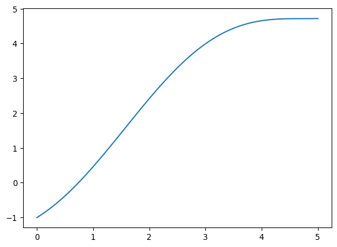

def biseccion(f, a, b, epsilon, N=1000000):
for i in range(N):
p = a + (b - a)/2
print(p)
if abs(f(p)) < epsilon:
print("Cero en", p, "encontrado después de", i, "iteraciones.")
return p
elif f(p)*f(a) > 0:
a = p
else:
b = p
print("No se encontró el cero después de", N, "iteraciones.")El método de bisección y el método de Newton
En muchos casos de interés queremos resolver una ecuación de una variable y la solución no se puede obtener de forma analítica. Por ejemplo al calcular las bandas de energía en un sólido de una dimensión se resuelve la siguiente ecuación
\[ f(z) = \cos(z) - \frac{\sin(z)}{z} \]
La energía permitida satisface \(-1 \leq f(z) \leq 1\). Entonces para encontrar las bandas de energía basta encontrar los lugares que satisfacen \(f(z) = \pm 1\). Pero no es posible hacerlo de forma analítica.
Este tipo de problemas se pueden reducir a encontrar dónde una función es cero. Veremos algunas técnicas para lograrlo.
Método de bisección
Consiste en partir un intervalo en dos y determinar en cual de los subintervalos se encuentra el cero que buscamos. Esto se hace repetidamente. Se puede aplicar a problemas más allá de los numéricos, para realizar búsquedas en listas ordenadas. El algoritmo (como todos los de esta clase) es de orden \(\mathcal{O}(\log)\).
Escogemos \(a\) < \(b\) tal que \(f(a)f(b) < 0\) y calculamos \(p_1 = a + \frac{a + b}{2}\)
Si \(f(p_1) = 0\) terminamos.
Si \(f(p_1)f(a) > 0\) entonces escogemos un nuevo \(a = p_1\). Si \(f(p_1)f(a) < 0\) entonces escogemos un nuevo \(b = p_1\). Repetimos desde el paso 0.
import numpy as npdef func(x):
return np.cos(x) - np.sin(x)/x - 1import matplotlib.pyplot as pltx = np.linspace(-6.5, -6, 100)
plt.plot(x, func(x))func(-6.5)np.float64(-0.056507757054717334)func(-6.1)np.float64(0.013131144060960942)biseccion(func, -6.5, -6.1, 0.0001)-6.3
-6.199999999999999
-6.25
-6.275
-6.2875
-6.28125
-6.284375
-6.2828125
Cero en -6.2828125 encontrado después de 7 iteraciones.-6.2828125Como condición para declarar el éxito hemos escogido que la función sea cercana a cero. Esto no necesariamente quiere decir que \(p\) sea cercano a la verdadera raíz necesariamente. Por eso uno podría requerir
\[ |p_n - p_{n-1}| < \epsilon \]
o mejor aún
\[ \frac{|p_n - p_{n-1}|}{|p_n|} < \epsilon \]
def biseccion(f, a, b, epsilon, N=1000000):
pp = a
for i in range(N):
p = a + (b - a)/2
if abs(p - pp)/abs(p) < epsilon:
return p
elif f(p)*f(a) > 0:
a = p
else:
b = p
pp = p
print("No se encontró el cero después de", N, "iteraciones.")biseccion(func, -6.5, -6.1, 0.0001)-6.283203125Nota: En vez de \(a + (b - a)/2\) uno podría escribir \((a + b)/2\) que tiene menos operaciones. Sin embargo esta segunda opción es más suceptible a errores de redondeo ya que la primera va modificando cada vez menos un resultado que va siendo cada vez una mejor aproximación.
Teorema: El método de bisección genera una sucesión \(\{p_n\}\) convergente a \(p\) con
\[ |p_n - p| \leq \frac{b - a}{2^n} \]
Para demostrarlo note que al \(n\)-ésimo paso
\[ (b_n - a_n) = \frac{1}{2^n}(b - a) \]
Pero además
\[ |p_n - p| \leq (b_n - a_n) \]
ya que tanto \(p_n\) como \(p\) están contenidos en el intervalo \([a_n, b_n]\).
En el problema que resolvimos arriba, supongamos que queremos encontrar el cero con una precisión mejor que el \(0.01\%\). Entonces despejamos
\[ 0.0001\times 6 = \frac{1}{2^n}(-6.1 + 6.5) \]
np.log((-6.1+6.5)/(6*0.0001))/np.log(2)np.float64(9.380821783940931)El método de Newton
Este es uno de los métodos más conocidos (y poderosos) para encontrar el cero de una función.
Una manera heurística de deducirlo es a partir de la serie de Taylor. Si tenemos un punto \(p_o\) cercano al cero de la función \(p\) entonces
\[ 0 = f(p) = f(p_o) + f'(p_o)(p - p_o) + \frac{1}{2}f''(\xi)(p - p_o)^2 \]
para algún \(\xi\) entre \(p\) y \(p_o\). Si \(p\) es lo suficientemente cercano a \(p_o\), podemos ignorar ese segundo término y obtener
\[ 0 \approx f(p_o) + f'(p_o)(p - p_o) \]
despejando encontramos una aproximación para \(p\)
\[ p \approx p_o - \frac{f(p_o)}{f'(p_o)} \]
A esta aproximación la llamamos \(p_1\) y debería ser más cercana a \(p\). Podemos entonces repetir el proceso empezando desde \(p_1\).
import numpy as np
import matplotlib.pyplot as pltclass MaxIterations(Exception):
passdef newton(f, df, po, epsilon, N=1000000):
for i in range(N):
p = po - f(po)/df(po)
if abs(p - po)/abs(p) < epsilon:
return p, i+1
po = p
raise MaxIterations("No se encontró el cero luego de", N, "iteraciones.")Así como antes, puede haber varios criterios para determinar la convergencia de este algoritmo. Comparemos con el método de bisección.
def biseccion(f, a, b, epsilon, N=1000000):
pp = a
for i in range(N):
p = a + (b - a)/2
if abs(pp - p)/abs(p) < epsilon:
return p, i+1
elif f(p)*f(a) > 0:
a = p
else:
b = p
pp = p
raise MaxIterations("No se encontró el cero luego de", N, "iteraciones.")def f(x):
return x - np.cos(x)def df(x):
return 1 + np.sin(x)x = np.linspace(0,5,100)
plt.plot(x, f(x))
biseccion(f, 0, 1, 0.00001)(0.7390861511230469, 18)newton(f, df, 1, 0.00001)(np.float64(0.7390851332151607), 4)El problema del método de Newton es que necesitamos la derivada, pero como veremos ésta puede en general ser costosa de calcular (más costosa que encontrar el cero). Por eso se introduce el método de la secante que consiste en aproximar
\[ f'(p_n) \approx \frac{f(p_n) - f(p_{n-1})}{p_n - p_{n-1}} \]
def secante(f, po, p1, epsilon, N=1000000):
qo = f(po)
q1 = f(p1)
for i in range(1, N):
p = p1 - q1*(p1 - po)/(q1 - qo)
if abs(p - p1)/abs(p) < epsilon:
return p, i
po = p1
p1 = p
qo = q1
q1 = f(p1)
raise MaxIterations('No se encontró el cero luego de', N, 'iteraciones')secante(f, 0, 1, 0.00001)(np.float64(0.7390851332150012), 5)Métodos de scipy
Estos métodos ya fueron programados en scipy. Lo siguiente es copiado de su documentación (https://docs.scipy.org/doc/scipy/reference/optimize.html).
from scipy import optimizedef f(x):
return (x**3 - 1)
def fprime(x):
return 3*x**2# El método de Brent es considerado el mejor, es una modificación del método de la secante.
# Implementa una fase inicial de acercamiento al cero usando bisección.
# Es necesario dar el intervalo en el cual se encuentra el cero.
sol = optimize.root_scalar(f, bracket=[0, 3], method='brentq')
sol.root, sol.iterations, sol.function_calls(1.0, 10, 11)# Podemos también llamar directamente el método de Newton si tenemos la derivada.
sol = optimize.root_scalar(f, x0=0.2, fprime=fprime, method='newton')
sol.root, sol.iterations, sol.function_calls(np.float64(1.0), 11, 22)Tareas
Tarea 6.1
Use el método de bisección para encontrar un cero de la función
\[ f(x) = 1 - \cos(x) -\frac{\sin(x)}{x} \]
entre \(-6.5\) y \(-6.0\). Grafique el error relativo requerido al calcular el cero en función del número de iteraciones que necesita el método para converger. Compare con la cota teórica.
Tarea 6.2
Encuentre un cero de la función
\[ f(x) = 1 - \cos(x) -\frac{\sin(x)}{x} \]
entre \(-6.4\) y \(-6.0\) usando el método de Newton y el método de bisección. Grafique el número de iteraciones requerido así como el tiempo requerido en función de la precisión para ambos métodos.
Tarea 6.3
Busque un ejemplo de una función tal que el método de bisección con la condición \(|p_n - p_{n-1}|/|p_n| < \epsilon\) converge siempre a un valor que no es un cero de la función.
Tarea 6.4
Intente escribir su propia versión del método de Newton, haciéndola lo más rápida posible. Luego compare el tiempo que tarda en resolver el ejemplo de clase (el cero de la función \(f(x) = x - \cos(x)\)) con el tiempo que tarda el método de Newton que se encuentra en scipy.
Tarea 6.5
Ejercicio 2.3.25, libro de Burden:
El modelo logístico de crecimimiento de poblaciones está descrito por una ecuación de la forma:
\[ P(t) = \frac{P_L}{1 - ce^{-k t}}\,. \]
Use los datos correspondientes a 1960, 1970 y 1980 de la siguiente tabla para encontrar \(c\), \(k\) y \(P_L\) usando el método de la secante. Luego prediga los valores para 1990 y 2020. Compare la predicción para 1990 con los datos reales de la tabla.
| Población | Año |
|---|---|
| 179 323 | 1960 |
| 203 302 | 1970 |
| 226 542 | 1980 |
| 249 633 | 1990 |
| 281 422 | 2000 |
| 308 746 | 2010 |